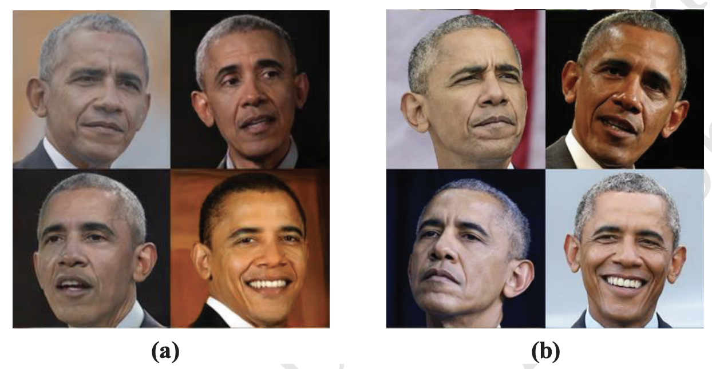
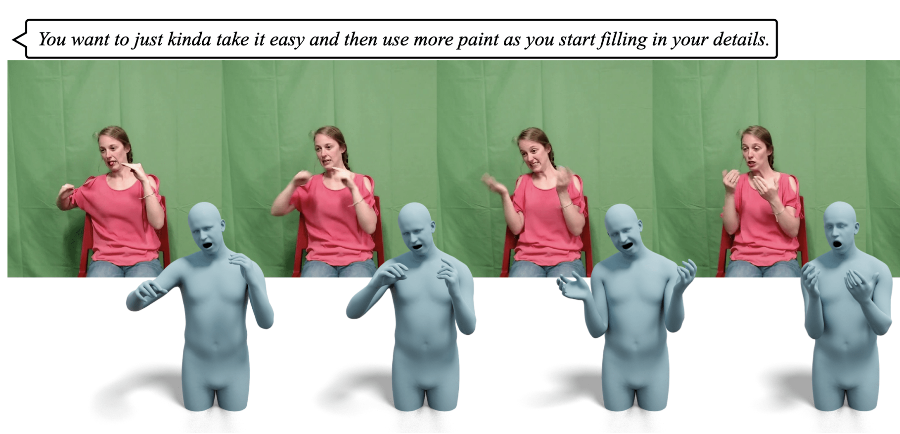
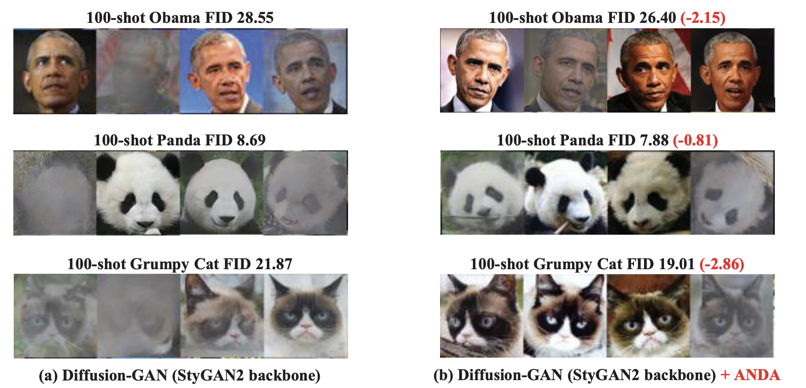
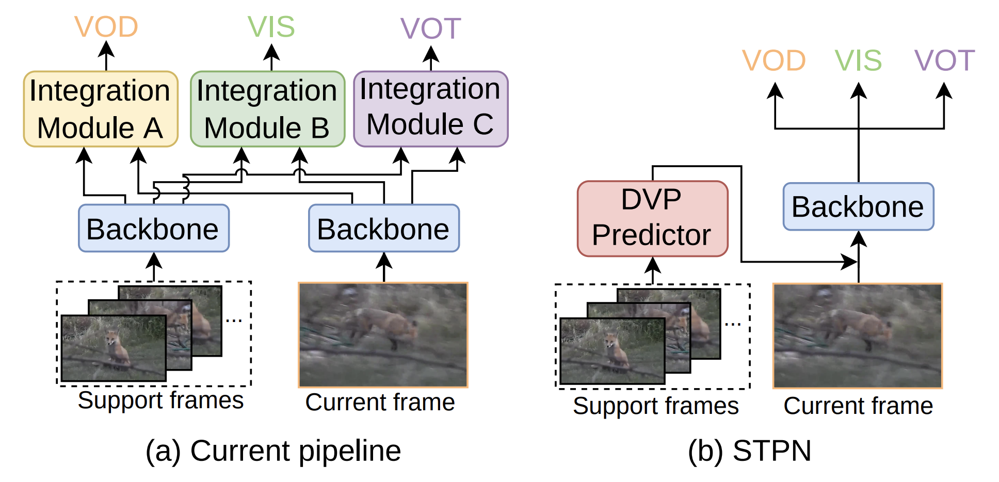
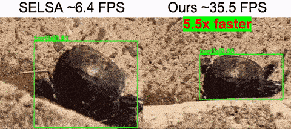
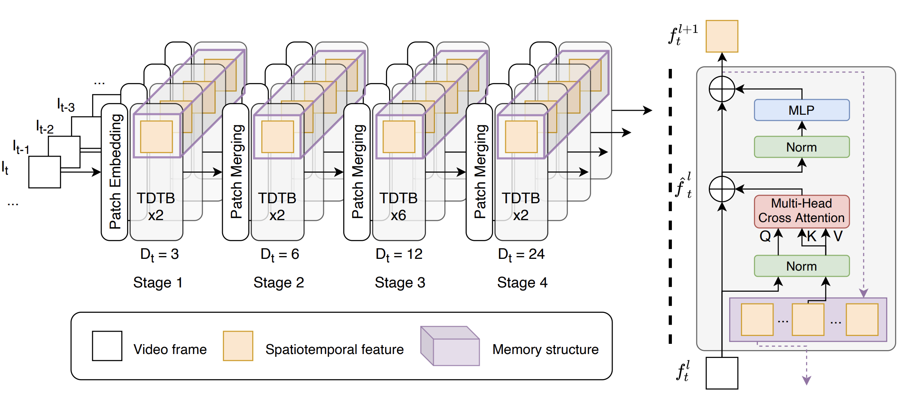
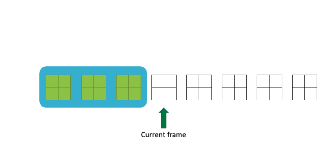

I got my PhD in computer vision at Queen's University Belfast , advised by Dr. Yang Hua , Prof. Hui Wang , and Prof. Neil Robertson . My research interests are mainly in video understanding and analysis. For example, how to model temporal dynamics in videos for robust features, how to align visual embeddings and text embeddings in multi-modal large language models (MLLMs), and how to reduce short-term redundancies while maintaining long-term correlations when modelling long videos.
I obtained my B.S. and M.S. degrees from Harbin Institute of Technology in 2016 and 2018. I worked on medical image processing during my M.S. degree, advised by Prof. Kuanquan Wang .
Email /
CV /
LinkedIn
Publications

Improving the Training of the GANs with Limited Data via Dual Adaptive Noise Injection
Guanxiong Sun , Hui Wang, Seán F. McLoone
ACM MM , 2024
arXiv

Neural Sign Actors: A diffusion model for 3D sign language production from text
Vasileios Baltatzis , Rolandos Alexandros Potamias , Evangelos Ververas , Guanxiong Sun , Jiankang Deng , Stefanos Zafeiriou
CVPR , 2024
arXiv

Improving the Leaking of Augmentations in Data-Efficient GANs via Adaptive Negative Data Augmentation
Zhangyu Zhang , Yang Hua , Guanxiong Sun , Hui Wang , Seán McLoone
WACV , 2024
PDF

Spatio-temporal Prompting Network for Robust Video Feature Extraction
Guanxiong Sun , Chi Wang , Zhangyu Zhang , Jiankang Deng , Stefanos Zafeiriou , Yang Hua
ICCV , 2023
arXiv
/
Code

Efficient One-stage Video Object Detection by Exploiting Temporal Consistency
Guanxiong Sun , Yang Hua , Guosheng Hu , Neil Robertson
ECCV , 2022
arXiv
/
Code

TDViT: Temporal Dilated Video Transformer for Dense Video Tasks
Guanxiong Sun , Yang Hua , Guosheng Hu , Neil Robertson
ECCV , 2022
arXiv
/
Code

MAMBA: Multi-level Aggregation via Memory Bank for Video Object Detection
Guanxiong Sun , Yang Hua , Guosheng Hu , Neil Robertson
AAAI , 2021
arXiv
/
Code
Academic Service
Reviewer
Number of visits:
in total.
Copyright © 2024-28 Guanxiong Sun.
Jon Barron 's and Wufei Ma's webpages.